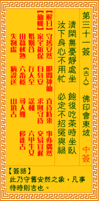

观音灵签第三十一签 【佛印会东坡】 |
 | |||
清闲无事静处坐 饥时吃饭困时卧 放下身心不用忙 必定不遭殃与祸 |
||||
| 【吉凶】 | 中中签 | 【宫位】 | 未宫 | |
| 【签语】 | 此卦守旧安然之象，凡事待时则吉也。 | |||
| 【解曰】 | 守旧安然 叩问神仙 直待时来 事亦偶然 | |||
| 【仙机】 | 此签家宅祈保，自身安，求财守待，交易宜迟，婚姻合，行人至，讼和，六甲生女，田蚕秋熟，六畜稳，寻人难，移徙吉，失物虚，病殁 送，山坟吉。 | |||
| 【详解】 | 清闲无事的时候就寻找一个宁静场所安坐，饿了就吃，想睡能睡;放下身与心的束缚不去牵挂，如此必然不会遭逢灾殃与祸事啊! 守己安静，即是神仙，待他时至，必定周全。此签守己安静之象，凡事宜守旧。 本签曰。清闲无事静处坐。饥时吃饭困时卧。可知君尔者当守己安静之时。凡事宜守旧。不宜在此时轻举妄动。动则凶。静则吉之刻。放下身心不用忙。唯有如此。方可除去祸与殃。易言之。守己安静即是待他时之至。必定周全。 此签有”思绪杂乱”之意。奉劝当事人，不要随便乱想。须知人可以有理想，但却不能有妄想。理想是实际的，已经拟好了一个方向、并想办法努力去实现。妄想则是随便的、不切实际的空想。未来的事还很难说，那何必去想”如果”?过去的事也已经过去，又何必再执着?凭空想象的事物不可能实现，如果执着于不切实际的幻想，只会让自己越陷越深、无法自拔。天下没有不劳而获的事，凡事脚踏实地，一分耕耘，才有一分收获。 | |||
| 【典故】 | 宋朝大诗人苏东坡有七个妻妾，最小的叫朝云。有一年寒冻的一天，佛印禅师来造访苏东坡，二人许久没相见，一谈就谈几个小时，越谈 越高兴。夜深了，东坡就叫朝云去服侍师傅。佛印叫朝云准备了一个水壶，七个火炉，葵扇和火炭等东西，搬到房间来，并叫朝云起火，然后把水壶放在第一个火炉上煮，水滚了 ，又放在第二个火炉上，然后第三个火炉，至到第七个火炉，如照做几遍，直到天亮，佛印在床上入定。突然，卜的一声，水壶里的水烧干而爆裂了，佛印叫朝云不必怕，回去睡 觉好了。第二天，朝云将昨夜的事告诉了东坡。东坡终于觉悟到佛印警告他：五欲不断，一定堕落。后来，佛印希望他顿悟人道，息心修行，他说：人生一世间，如白驹过隙，三 二十年，功名宝贵，转眼成空，课不一律勾断，寻取自家本来面目？ | |||